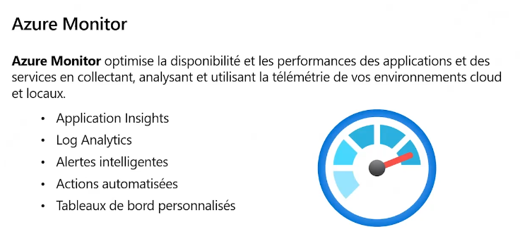

2021-09-14
Formateur Mehdi Sebbane: Profil LinkedIn
Préparation à la certification AZ900.
Partie 1: https://event.on24.com/wcc/r/3262319/79D7A552D03369897F33E3707C985EBC
Partie 2: https://event.on24.com/wcc/r/3262346/E54A27301337FF25C7D690F15324DB66
Domaines de certification AZ900:
Région: Centre de données distribués dans le monde et donnant un accès aux services Azure.
Influe sur:
Un groupe de ressources peut contenir des ressources de régions différentes.
Le Azure Resource Manager:
Par défaut les ressources d’un abonnment ne peuvent pas communiquer avec les ressources d’un autre abonnement.
Pour changer ça on utilisera le pairing.

Pour centraliser toutes les options de sécurité on utilisera Azure Firewall.
Azure Firewall est payant
On peut synchroniser un Active Directory on-premise vers un ADD
Permet de gérer plus facilement toutes les ressources.
6 facteurs influent sur le coût: